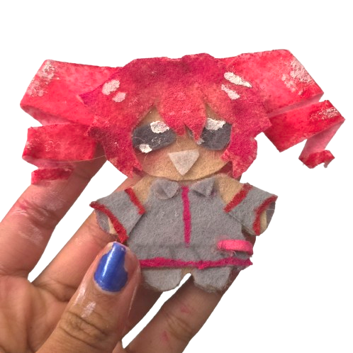
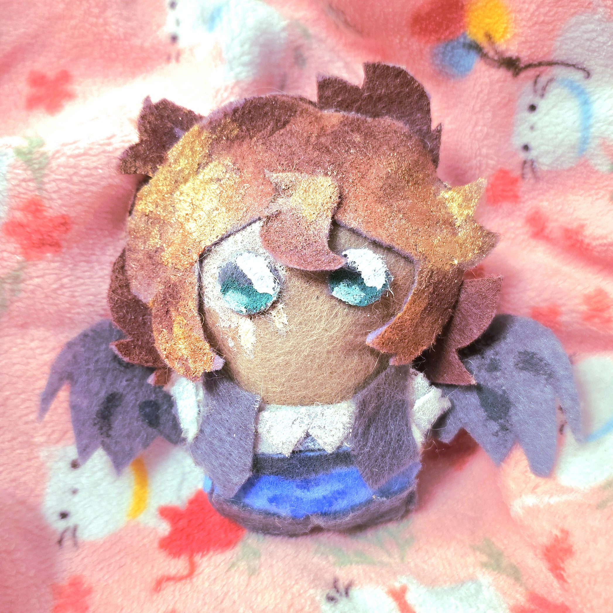
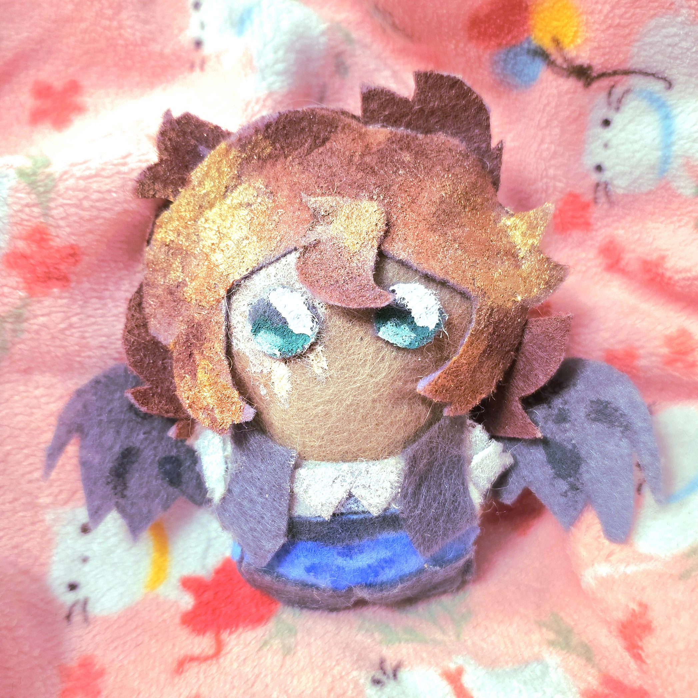
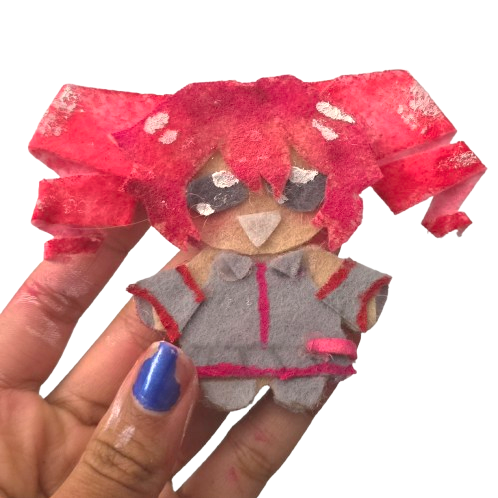
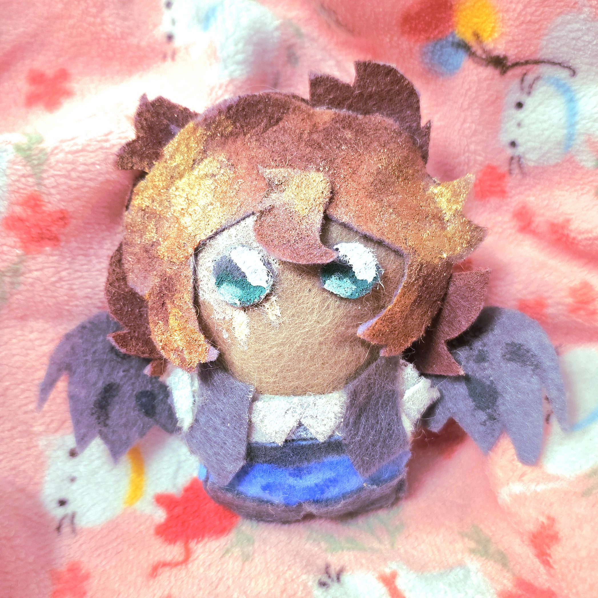

difference between with and without sparkles !
 
 
my felt dolls r lovingly handmade and i would be so grateful for ur order :D !! i spend hours on each one making sure they r super cute !! you can customize them exactly how you'd like !! :D i will ask that you provide reference images and will do my very best to be accurate to them !!
warning : the glitter and charms are likely to fall off if treated roughly !! >n< however, i've taken mine outside / to school before various times and they came back unscathed :D it's generally best to be gentle with them but they should be okay !! ^-^
i accept payment in cash only for now ^_^ dm me on discord or insta @_kaito_lover to place your order !! every order will come with a free mini sticker sheet (more if u order more than one doll) !! :3
difference between with and without sparkles !

